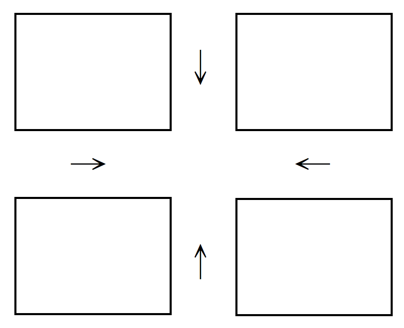

Midterms at NTUCSIE¶
Fall 2012¶
The exam is 180 minutes long. The total score is 110pts. Please read the questions carefully.
-
Terminologies. (24pts)
- Hardware Interrupt
- Virtual Machine
- Context Switch
- A Full Duplex Pipe
- Multilevel Queue Scheduling
- Memory Stall
- Bounded Waiting (A Requirement of a Critical Section Solution)
- Adaptive Mutex
-
Please answer the following questions regarding the designs of operating systems: (20pts)
- What is the difference between multiprogramming and time sharing? (6pts)
- Which one of the following memory unit is managed by the operating systems: Registers, Cache, Main Memory, Disks (8pts)
- Operating systems services include user interfaces. UNIX shells, including the Boume shell and C shell, provide command interpreters. Consider UNIX shells, please give me one command that is implemented as some code inside the command interpreter and two commands that are implemented by system programs? (6pts)
-
Message passing is a way for interprocess communication. Consider the capacity of a link between two processes has zero capacity. Is the message passing (between the two processes) synchronous or asynchronous? You must provide explanation to receive any credits. (5pts)
-
Please give me one occasion when a mid-term scheduler should run. Can a short-term scheduler schedule the executions of user-level threads? Can a short-term scheduler schedule the executions of a Java thread? (9pts)
-
Consider signal handling for threads. Is a Division-By-Zero signal synchronous or asynchronous? Should a Division-By-Zero signal be delivered to every thread of its belonging process? (6pts)
-
Please answer the following questions for process scheduling. Explanation is needed to receive any credit. (24pts)
- For the Round-Robin Scheduling, what would be the preferred time slice in general? (4pts)
- For the Round-Robin Scheduling, shall we have a small time slice for a better average turn around time? (4pts)
- For the Priority Scheduling, how to avoid the starvation problem (in which a low priority process can never be scheduled)? (4pts)
- Please explain how a guest operating-system scheduling algorithm that assumes a certain amount of progress in a given amount of time might be negatively impacted by virtualization. (6pts)
- For the evaluation of a scheduling algorithm, please give me two difficulties in using the implementation method. (6pts)
-
Please explain the difference between the signal operation of a binary semaphore and that of a condition variable (of a monitor). (5pts)
-
Consider a barber shop in which there are two barbers. Each barber can service exactly one customer at a time. Please use binary semaphores to implement the request for the hair-cut service. (12pts)
-
Consider the time-stamp protocol of Chapter 6, in which each process $T_i$ is given a time stamp $T_S(T_i)$, and each read/write operation must check it up with the read and write timestamp of the accessed data object $Q$. Is it possible to have any deadlock? You must provide your explanation. (5pts)
Fall 2013¶
The exam is 180 minutes long. The total score is 103pts. Please read the questions carefully.
-
Terminologies. (24pts)
- Booting
- Interrupt Vector
- Cache Coherency
- Platform as a service (PaaS) in Cloud Computing
- A Modular Kernel (Hint: OS Structure)
- Data Parellelism in Multicore Programming
- Rate Monotonic Scheduling
- Deterministic Modeling
-
Please answer the following questions regarding the designs of operating systems: (20pts)
- There are two conflicting goals in the designs of operating systems. What is the other one, beside "convenient for the users" ? (3pts)
- Which one of the following actions/events is belonging to or might result in software interrupts: System calls, child termination, mouse clicking, invalid memory access. (8pts)
- Consider the implementation of virtual machines in which operating systems run on the top of the virtual machine software (or referred to as the hypervisor). Is an operating system running in the user mode or kernel mode? (3pts)
- Please give me 2 advantages of virtual machines, beside system consolidation and easy in system development/deployment. (6pts)
-
ANSI C refers to the family of successive standards published by ANSI for the C programming language. Please compare difference (or provide the purpose difference) between POSIX and ANSI C. (5pts)
-
Please answer the following questions for task scheduling. (14pts)
- Is the "Swapper" a short-term or mid-term scheduler?
- In Unix, the process control block PCB[] of a process consists of proc[] and .u, where the attributes in .u are those needed when the process is running, and the attributes in proc[] are those needed all the time. Please indicate which one should be in .u : file[], task priority, pid, signal disposition, and task state. You must provide explanation to receive any credits. (10pts)
-
Consider message passing and shared memory for inerprocess communication. Is "Pipe" considered one for message passing or shared memory ? Is "Pipe" direct or indirect communication ? Is it "synchronous" or "asynchronous"? for a reader or a writer of the communication in Unix. You must provide explanation to receive any credits. (12pts)
-
Kernel-level threads are superior than uer-level threads do in many ways. What is the main disadvantage of kernel-level threads ? With OpenMP in program development, shall we prefer kernel-level or user-level threads? You must provide explanation to receive any credits. (8pts)
-
Please answer the following questions for process scheduling. Explanation is needed to receive any credits. (15pts)
- Given 3 processes P1, P2, and P3 with CPU burst time 5, 6, 7, respectively. Suppose that the 3 processes arrive at time 0, and P1 and P3 are the first and the last processes in the ready queue, respectively. What is the average waiting time in running the 3 processes under the Round-Robin Scheduling with the time slice equal to 3. (5pts)
- Consider FCFS and Round-Robin Scheduling. If process are only of CPU burst and all arrive at time 0, do FCFS and Round-Robin Scheduling with time slice = 1 always have the same total waiting time in running all processes ? Prove your answer. (5pts)
- Suppose that the variance of the tunaround time is the cirterion in process scheduling. Shall we have a small time slice for a better variance turnaround time when all processes arrive at time 0? (5pts)
-
Please explain why the Completely Fair Scheduling (CFS) of Linux V2.6 favors I/O tasks. (5pts)
Fall 2014¶
The exam is 180 minutes long. The total score is 108pts. Please read the questions carefully.
-
Terminologies. (24pts)
- Buffering (Hint: It is not caching.)
- Virtual Machine
- System Generation (SYSGEN)
- Context Switch
- Remote Procedure Call (Hint: Message Passing)
- Implicit Threading
- Earliest Deadline First Scheduling
- Race Condition
-
Please answer the following questions regarding the designs of operating systems: (22pts)
- An operating system could be considered as a resource allocator. Please list 3 resources managed by an operating systems. (6pts)
- Please explain what happens to the operating system when an interrupt arrives (until the interrupt is serviced). (4pts)
-
Which one of the following instructions is a privileged instruction:
Reading of the Timer, setting of the base register of the memory space of a process, increment the value of a CPU register by one. No explanation is needed. (6pts)
-
Please explain what happens when a command-line user interface of Unix executes a command. (6pts)
-
Consider parameter passing to a system call. Give me the major advantage in having a register pointing to a memory block that stores all parameters, compared to having all parameters stored in registers? (5pts)
-
The memory image of a Unix process might consist of a code segment, a data segment, a heap area, a user stack, a kernel stack, an environment variable area, and .u. Which one of the above is used when
malloc()is invoked? When the kernel stack is used? (8pts) -
Please explain how
fork()works when a parent process invokefork(). Please use the answer to thefork()invocation to explain the difference betweenfork()andvfork(). (10pts) -
In the multi-core age, threading is encouraged. Please answer the following questions: (8pts)
- For multiple cores, do we prefer kernel-level threads or user-level threads? Why? (3pts)
- There are also challenges in programming. Consider merge sorting, in which an unsorted list is divided into $N$ sublists, each containing $1$ element, and then we repeatedly merge sublists to produce new sorted sublists until there is only $1$ sublist remaining. This will be the sorted list. Please use the concept of task parallelism to execute the merge sort over $N$ cores. (5pts)
-
Please answer the following questions for process scheduling. Explanation is needed to receive any credit. (15pts)
- Given 5 processes P1, P2, P3, P4, and P5 with CPU burst time 6, 5, 2, 10, 5, respectively. Suppose that the P1, P2, P3, P4, and P5 arrive at time 0, 3, 4, 2, and 5, respectively. What is the average waiting time in running the 5 processes under the Preemptive Shortest-Job-First Scheduling. (5pts)
- Consider Shortest-Job-First Scheduling and Round-Robin Scheduling. Please prove that the total waiting time in running all processes under Shortest-Job-First Scheduling is always no larger than that of Round-Robin Scheduling with time slice equal to 1 when all processes are ready at time 0? (5pts)
- Suppose that the variance of the waiting time is the criterion in process scheduling. Shall we have a small time slice for a better variance for Round-Robin Scheduling when all processes of the same CPU burst arrive at time 0? (5pts)
-
Please answer the following questions for process synchronization: (16pts)
- Please compare the difference between a binary semaphore and a condition variable. (3pts)
- Please use Monitor to implement Consumer and Producer with a bounded buffer. (10pts)
- Please prove that your above solution satisfy the Progress requirement of the Critical Section Problem. (3pts)
Fall 2015¶
The Exam is 180 minutes long. The total score is 105pts. Please read the questions carefully.
-
Terminologies.(24pts)
- Software Interrupts
- Performance Tuning
- Mid-Term Scheduler
- FIFOS of UNIX
- Asynchronous Signal
- Push Migration (Hint:Load Balancing)
- Coarse-Grained Multithreading of Hardware Threads
- Analytic Evaluation
-
Please answer the following questions regarding operating systems: (20pts)
- Please compare the difference between interrupt handling by a generic handler and interrupt vector in terms of the mechanism and the response performance. (6pts)
- Please compare the difference between the terms "time sharing" and "multiprogramming". (4pts)
- One of the most challenging parts in the implementations of a virtual machine is to satisfy the assumption of a certain amount of progress in a given amount of time. Please explain the challenge. (6pts)
- Parameter passing is an important issue in the implementation of command interpreters. Please explain how a command interpreter of Unix passes parameters to the running process of a command issued on the command interpreter. (4pts)
-
Consider process states: New, Ready, Running, Waiting, and Terminated. Please explain how a state makes a transition to another state, where there is only one processor. (12pts)
-
Message passing is one major way for interprocess communication. What is the main difficulty in using symmetric addressing for direct communication? For indirect communication, small messages are sent from a sender to a receiver usually by message copying. How to reduce system overheads in-sending large messages to a receiver? (8pts)
-
For multicore programming, there could be data parallelism or task parallelism. Please explain how to use data parallelism to find the largest integer of a given set of integers. (5pts)
-
Please answer the following questions for process scheduling. Explanation is needed to receive any credit. (15pts)
- Is the First-Come, First-Served Scheduling (FIFO) a non-preemptive or preemptive scheduling algorithm? Why? (4pts)
- Given 4 processes P1, P2, P3, and P4 with CPU burst time 5, 2, 4, and 6, respectively. Suppose that the P1, P2, P3, and P4 all arrive at time 0. What is the average waiting time in running the 4 processes under the Round-Robin Scheduling with the time slice equal to 3? (5pts)
- Longest-Job-First Scheduling always schedules the process of the longest CPU burst first. When all processes arrive at time 0, does Longest-Job-First Scheduling have the largest average turnaround time? (6pts)
-
Consider the intersection of the following two roads, where cars can go from each of the four directions. There is a stop sign for each direction so that every car must stop at the intersection and wait for any car that arrives earlier at the intersection to leave first.
- Please use semaphores to implement your solution with some pseudo code. (10pts)
- Please prove that your above solution satisfy the three requirements of the Critical Section Problem. (6pts)
-
Could you revise your solution so that an ambulance can always go first? (5pts)
